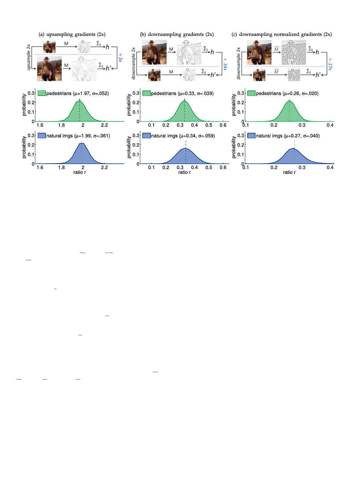

1534
IEEE TRANSACTIONS ON PATTERN ANALYSIS AND MACHINE INTELLIGENCE, VOL. 36, NO. 8, AUGUST 2014
Fig. 1. Behavior of gradient histograms in images resampled by a factor of two. (a) Upsampling gradients. Given images I and I0 where I0
denotes I upsampled by two, and corresponding gradient magnitude images M and M0, the ratio SM=SM0 should be approximately 2. The
middle/bottom panels show the distribution of this ratio for gradients at fixed orientation over pedestrian/natural images. In both cases the
mean m % 2, as expected, and the variance is relatively small. (b) Downsampling gradients. Given images I and I0 where I0 denotes I down-
sampled by two, the ratio SM=SM0 % 0:34, not 0:5 as might be expected from (a) as downsampling results in loss of high frequency content.
(c) Downsampling normalized gradients. Given normalized gradient magnitude images Me and Me 0, the ratio SMe =SMe 0 % 0:27. Instead of trying
to derive analytical expressions governing the scaling properties of various feature types under different resampling factors, in Section 4 we
describe a general law governing feature scaling.
continuous signal, and let I0 denote I upsampled by a factor
of k: I0ðx; yÞ � Iðx=k; y=kÞ. Using the definition of a deriva-
tive, one can
for
@I0
@y
,
which
show
that
@I0
@x
ði;
jÞ
simply states the
¼
1
k
@I
@x
ði=k;
j=kÞ,
and
likewise
intuitive fact that the rate of
change in the upsampled image is k times slower the rate of
change in the original image. While not exact, the above
also holds approximately for interpolated discrete signals.
Let
M0ði; jÞ
%
1
k
M
ðdi=ke;
dj=keÞ
denote
the
gradient
magni-
tude in an upsampled discrete image. Then:
X kn
i¼1
X km
j¼1
M 0 ði;
jÞ
%
X kn
i¼1
X km
j¼1
1
k
M ðdi=ke;
dj=keÞ
¼
k2
Xn
i¼1
X m
j¼1
1
k
M ði;
jÞ
¼
k
Xn
i¼1
X m
j¼1
M ði;
jÞ:
(1)
Thus, the sum of gradient magnitudes in the original and
@uA@Iyp0nðsgia;lmjeÞsp%lseh@@dxIoðuiiml=dka;gaje=lsksohÞ�ob@@ueIylðdim=bkoe;sjrt=leyklaÞ.tpeTrdehsbeeyrrevafeobdroeu,stianacccfeaocr@@tdIxo0irðniog; fjÞtk�o.
the definition of gradient histograms, we expect the rela-
tionship between hq (computed over I) and hq0 (computed
over I0) to be: h0q % khq. This allows us to approximate gra-
dient histograms in an upsampled image using gradients
computed at the original scale.
Experiments. One may verify experimentally that in
images of natural scenes, upsampled using bilinear interpo-
lation, the approximation hq0 % khq is reasonable. We use
two sets of images for these experiments, one class specific
and one class independent. First, we use the 1;237 cropped
pedestrian images from the INRIA pedestrians training
data set [21]. Each image is 128 Â 64 and contains a
pedestrian approximately 96 pixels tall. The second image
set contains 128 Â 64 windows cropped at random positions
from the 1;218 images in the INRIA negative training set.
We sample 5,000 windows but exclude nearly uniform win-
dows, i.e., those with average gradient magnitude under
0:01, resulting in 4,280 images. We refer to the two sets as
‘pedestrian images’ and ‘natural images,’ although the latter
is biased toward scenes that may (but do not) contain
pedestrians.
In order to measure the fidelity of this approximation, we
define the ratio rq ¼ hq0 =hq and quantize orientation into
Q ¼ 6 bins. Fig. 1a shows the distribution of rq for one bin
on the 1;237 pedestrian and 4; 280 natural images given an
upsampling of k ¼ 2 (results for other bins were similar). In
both cases the mean is m % 2, as expected, and the variance
is relatively small, meaning the approximation is unbiased
and reasonable.
Thus, although individual gradients may change, gradi-
ent histograms in an upsampled and original image will be
related by a multiplicative constant roughly equal to the
scale change between them. We examine gradient histo-
grams in downsampled images next.
3.2 Gradient Histograms in Downsampled Images
While the information content of an upsampled image is
roughly the same as that of the original image, information
is typically lost during downsampling. However, we find
that the information loss is consistent and the resulting
approximation takes on a similarly simple form.
If I contains little high frequency energy, then the
approximation h0q % khq derived in Section 3.1 should apply.
In general, however, downsampling results in loss of high